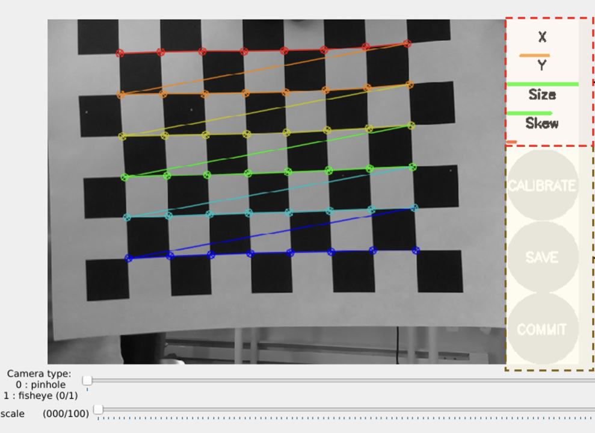

Monocular Vision based Navigation of a 4-wheeled Robot

- The vision system consisted of a monocular camera system (5MP 1080p Raspberry Pi Camera module) interfaced with a Raspberry Pi running ROS Noetic on Ubuntu. The DC motors running the wheels and the servo controlling the orientation of the camera were handled by an L293D driver board which was connected to the GPIO pins of the Raspberry Pi
- First, the camera was calibrated using the
camera_calibrationROS package that uses a checkerboard pattern as a target and performs calibration on either a monocular or stereo system. Once the calibration was complete, thefiducialspackage in ROS was used for localizing the robot with respect to a marker placed in the environment - The messages from the fiducial node were then used to move the robot towards the marker and park it at a specified location. The motion of the robot was implemented using a PID controller.

The repository for this project can be found here: Github Link